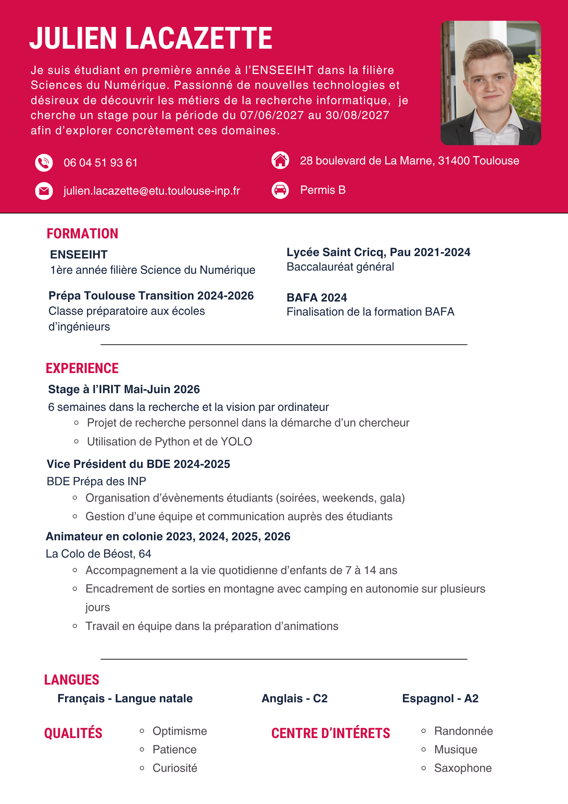
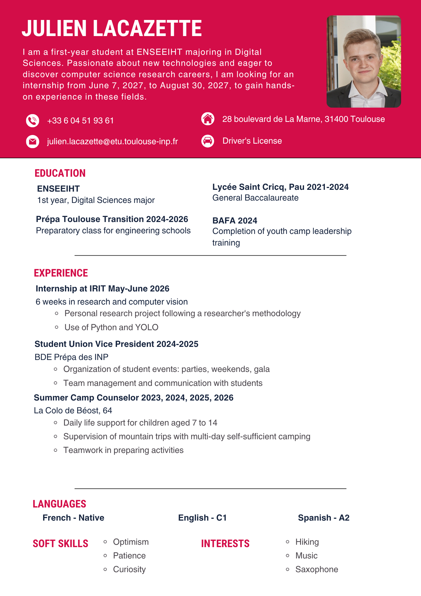

Internship at IRIT: computer vision
Six weeks at the Toulouse Institute of Computer Science Research (IRIT), in May–June 2026, on object detection in images.
I carried out a personal research project following a researcher's approach: ask a question, read what already exists, test, then analyze what works and what fails.
I used Python and YOLO, a family of models that spots several objects in an image in a single pass. I compared three approaches (classification, object detection and segmentation) on images of parrots, and examined their errors using confusion matrices.
- Location IRIT, Toulouse
- Duration 6 weeks
- Tools Python, YOLO
- Field Computer vision


CV
My CV in two languages. Choose the version.


Background
Education, internships and commitments, from most recent to oldest.
- Sept. 2026 – present
Engineering cycle, 1st year · Digital Sciences track
Digital Sciences program at ENSEEIHT, Toulouse INP.
- May – June 2026
Internship in a computer science research laboratory – IRIT
Six weeks of research in computer vision, with Python and models such as YOLO or SAM.
- Oct. 2024 – Oct. 2025
Vice-President of the Prépa T² student union (BDE)
Organization of student events (parties, weekends, orientation, ...).
- Sept. 2024 – June 2026
Prépa Toulouse Transition
Mathematics, physics, chemistry, algorithmics and Python programming.
- 2024
General baccalaureate, with highest honors
Specialties: mathematics and physics-chemistry.